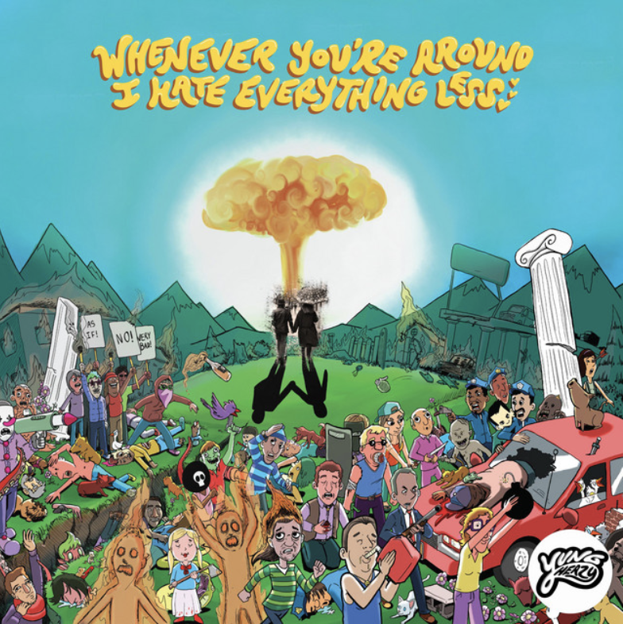

| 5.29.22  I'M NEVER GONNA SOBER UP! ill sober dowwnnn |
A few days ago, the song "Heroine Soup" by Yung Heazy was brought to my attention. Naturally I had to go back to that album
and ended up listening to some of the songs from the album Whenever You're Around I Hate Everything Less. My top three choices
(besides "Heroine Soup" because fuck you of course that song extends past any heirarchy) are ❶"If I Had a License" ❷"Time" ❸ "Backup Plan".
The order is simply how they appear on the album. ❶ "If I had a Liscence" is longing; it makes me want to cry with the sad sigh that starts the track. It is all of the 'wishing'. Rather than saying something like "Never know the feeling to love someone", the line is repeated in two separate places "Never know the feeling to hurt someone." The song isn't very long or complicated, but it is just a dude singing with all this emotion, and that is what I love. LYRIC OF THE SONG: "So what's the point in making music if all that you fades away?" ❷ "Time" is a song I never finish. I always skip before the end because it is honestly too repetitive. That is kinda the point though-- to show the passing of time in the repetitive manner: the smaller incriments fade into the larger ones until years feel like seconds and you are repeating to yourself like the song does "I'm young/Yung" (I don't know if it is young or the name Yung, but either one works-- clinging to your youthfulness or your stage identity as a means of grounding yourself as you feel time is moving out of your control.) ❸ "Backup Plan" also has some similar energy to "If I had a Liscence" but with more gusto and disenchantment (no NOT the song "Disenchantment" by MCR but omg I am going to go listen to THAT song now and cry). From the first line, "I wonder which of my friends will give up first/You say it's growing older but we know much worse", Sir Heazy does not let up on the disillusionment seeping through the song as he gazes into the future, but decides "I don't have a backup plan/All I have is in the band." In this song, I want to point out another line, "This will be the final time I relax." Here, the music stops, and Yung takes a deep breath. Up until a few days ago, I had thought the line was "This will be the final time I relapse." I then interpretted the pause to be people going silent at that uncomfortable assertion before the next line, "Spare another moment I wish I had back"-- implying to my previous understanding-- that after relapsing, they would be gone. The line after that, "Promise me you'll never find a real job" gets even sadder with my previous understanding of the song: Heazy, Yung was going to relapse, stop fighting, and no longer be here, but before that, he was looking to the listener and making them make promise to "never get a real job" (and in that was saying approximately: "Dont grow up or give in, for me-since I won't be there in the future.") My understanding of the future is so much more convoluted than it was when I first heard this song. I don't know. I think the song is a lot less sad with the word "relax" instead of "relapse", but now the song is almost too sweet, too purely "coming-of-age" disillusionment with "grown-ups" rather than a resigned suicide note: The meaning has shifted, but I guess in 5 years I have shifted too. ‧₊˚✩彡 Yung Heazy is not even in my top [insert number] list of artists, but these songs send me back to high school in a really unconscious way that I don't know if I need to spend any more time trying to decode ("Decode" by Paramore ANOTHER BOP). I feel hypnotised when I hear these songs and can't separate them from that point in time. The album is an eternal canker on what was already a horrendous year in my mind, but that's not the fault of Yung Heazy. RATING: 7 in mental distress; 4 in listenability for how I can't finish most songs on the record; 7 in words smacking me |
|---|
𓁺𓁿𓁺